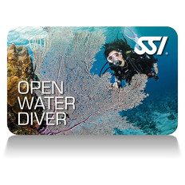

Verschillende niveau's
Bij duiken heb je net als bij de meeste sporten verschillende niveau's.
Als je 8 jaar of ouder bent kun je beginnen met duiken, je begint dan bij de Scuba Rangers. Dat is een groep met kinderen van 8 tot 12 jaar waarin je spelend leert duiken. Je duikt alleen nog maar in het zwembad maar je leert wel alle basics zoals je eigen set opbouwen, hoe je eigen set werkt, wat je moet doen in noodsituaties, etc.
Als je 12 jaar bent mag je officieel gaan beginnen met je OWD (Open Water Diver). Je krijgt theorielessen met theorie die te maken heeft met een stukje biologie en natuurkunde. Je leert onder andere wat de maximale opstijgsnelheid is voor er stikstofbelletjes in je bloed onstaan (decompressieziekte) en verschilende dingen over stroming, zwempatronen etc. Je krijgt in een jaar tijd 3 theorielessen en 1 examen en elke week les in het zwembad. Als je voor je examen geslaagd bent ga je buiten je eerste open water duik maken. Dat is nog niet in de zee maar vaak in een plas zoals Oostvoorne. Als je minimaal 4 open water duiken hebt gedaan krijg je je brevet en kun je verder gaan met specialties.
Specialties zijn ook brevetten die je kunt halen maar je hebt ze niet verplicht nodig om te mogen duiken. Je verdiept je in 1 onderwerp en leert ook daar weer theorie van en je oefent in het zwembad. In plaats van een jaar zoals bij je OWD doe je over een specialty een half jaar. Je doet dus elk jaar 2 specialties zolang je doorgaat met duiken. Voor specialties heb je 2 theorielessen en 1 examen en je moet minimaal 4 buitenduiken doen.
Hieronder staat een overzicht van de brevetten die je kunt halen:
- Scuba Ranger (8 tot 12 jaar)
- Open Water Diver (vanaf 12 jaar)
- Perfect Buoyancy
- Navigation
- Search And Recovery
- Night And Limited Visibility
- React Right (Basic Life Support)
- Stress and Rescue
- Boat Diving
- Equipment
- Deep diving (vanaf 16 jaar)
- Nitrox diving
- Science of diving
Deze brevetten zijn te halen met SSI dat is een andere opleiding dan PADI daar kun je dus ook andere brevetten halen.
Er zijn ongetwijfeld meer brevetten die je kunt halen maar het is moeilijk om deze allemaal te vinden. Ook is het per duikschool verschillend welke cursussen ze aanbieden.
